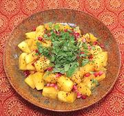

|
Pineapple ChaatIndia, Hyderabad - Anāsa pandu | ||||
| Serves: Effort: Sched: DoAhead: |
5 app ** 35 min Most |
A simple fresh, fruity, easy to make snack dish popular in Hyderabad, India. It can also be made with Mangos or Watermelon. | |||
|
1 ----- 4 1/2 1 ----- tt tt tt |
--- T t t --- |
Pineapple (1) -- Seasoning Lime Juice Sugar Chaat Masala (2) -- Garnish Chili Powder (3) Pomegranate Seeds Mint Leaves |
PREP - (25 min)
|